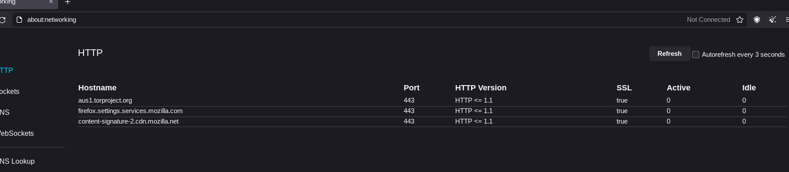

Tor Browser Bundle
Versão testada: 11.0.3
Tor é um software livre e uma rede aberta que ajuda você a se defender contra análise de tráfego, uma forma de vigil0ncia de rede que ameaça a liberdade e privacidade pessoal, atividades e relacionamentos comerciais confidenciais e segurança do Estado[1] Este artigo é sobre o Tor Browser Bundle para desktop, que é o baseado no Firefox. O próprio Tor pode ser usado com qualquer navegador.
Nível de Spyware: Baixo
O navegador Tor é um navegador da Web focado em privacidade que é usado para acessar a Internet através da Rede Tor. As conexões através da rede Tor são muito mais privadas do que as conexões normais, pois você não possui um endereço IP associado a você. Embora os serviços de spyware possam dizer que vocês está se conectando a partir da rede Tor, sua capacidade de identificar e criar seu perfil é bastante reduzida.
O navegador Tor possui atualizações automáticas e envia telemetria, embora pelo Tor.
Se você acessar about:networking, verá vários endereços afiliado à Mozilla, mesmo antes de o Tor ser conectado. Você pode mitigar o spyware, mas observe que há uma chance de que ele seja substituído por atualizações futuras.
